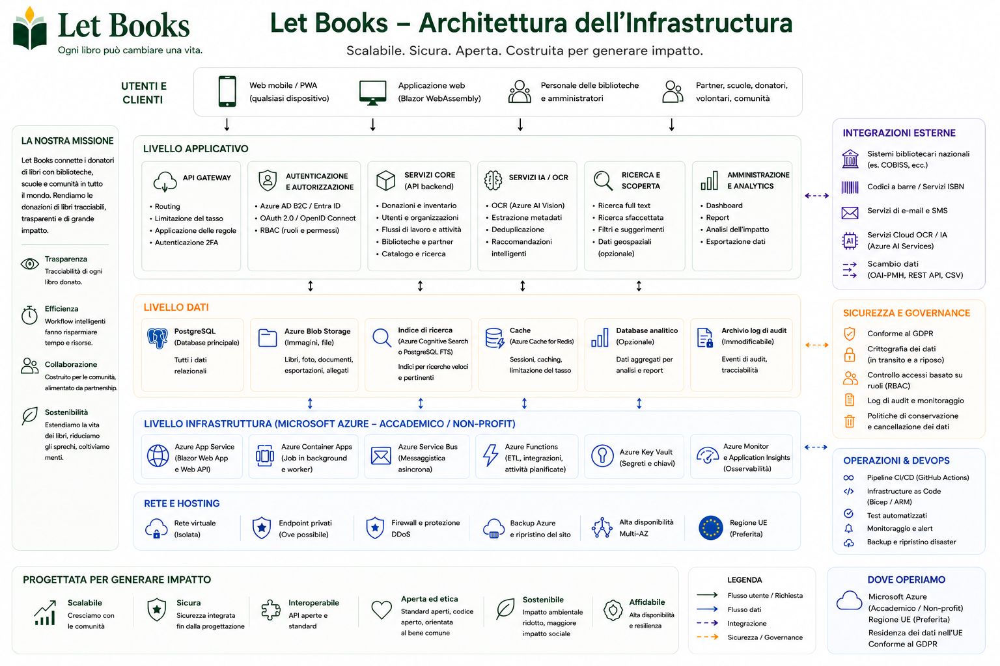

Gli esempi di hosting e governance descrivono la direzione dell'architettura e delle regole, ma non significano implementazioni certificate o responsabilità di produzione esistenti.
Guida per amministratori
Allinea accesso, privacy e logistica fin dall'inizio.
Let Books deve essere utile a un donatore privato, a un'associazione o a un futuro host istituzionale. Gli amministratori hanno quindi bisogno di regole chiare su utenti, tenant, ruoli, posizioni e uso opzionale dell'AI.

Cosa gestiscono gli amministratori
- Accessi approvati e appartenenze
- Tenant e ruoli
- Struttura delle posizioni e flussi di donazione
- Confini di privacy e audit
- Impostazioni opzionali per AI, OCR e traduzione
Cosa evitare
- Accesso basato solo su login esterno
- Divulgazione pubblica di posizioni di stoccaggio precise
- AI a pagamento obbligatoria nei flussi principali
- Confondere la copia fisica con metadati puri
Modello di accesso
L'autenticazione può provenire da fornitori esterni di identità, ma l'autorizzazione deve restare sotto il controllo dell'applicazione.
Accessi approvati
Le implementazioni iniziali o private dovrebbero limitare l'accesso agli utenti approvati in anticipo.
Appartenenze ai tenant
Lo stesso utente può partecipare a più tenant con ruoli diversi.
Visibilità per ruolo
I revisori non devono vedere automaticamente note private o dettagli della casa del donatore.
Privacy e governance
Posizioni esatte, note private e dati di contatto devono restare limitati. Esportazioni, importazioni, cambi di ruolo e future richieste AI devono essere registrati.
Direzione dell'implementazione
La piattaforma deve funzionare per un'implementazione privata, ma restare aperta a hosting istituzionale o autogestito più avanti, con archiviazione indipendente dal fornitore.
Esempio: Un'associazione usa Let Books per più donatori locali e biblioteche partner. Un amministratore approva l'accesso, ogni donatore ha il proprio tenant e l'OCR resta disattivato finché non esiste un budget dedicato.